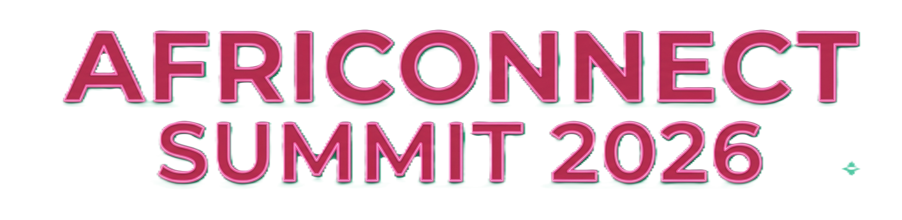

Cybersécurité & Souveraineté
Protection des infrastructures critiques, audit défensif et enjeux de la gouvernance des données sur le continent.

| Heure | Session | Intervenant | Salle |
|---|---|---|---|
| 08:30 - 09:30 | Accueil des participants et enregistrement | Équipe d'organisation | Hall Principal |
| 09:30 - 11:00 | Cérémonie d'ouverture & Keynote : L'état de la souveraineté numérique en Afrique | Afi Diallo | Amphithéâtre Principal |
| 11:15 - 12:30 | Table ronde : Infrastructures Cloud d'importance vitale et résilience face aux cybermenaces | Malik Adebayo, Afi Diallo | Salle Conférence A |
| 14:00 - 15:30 | Atelier pratique : Audit de sécurité et premiers réflexes sur Kali Linux | Expert Sécurité Invité | Lab Numérique |
| 16:00 - 17:30 | Pitch Session : Les innovations cybersécurité de la sous-région | Startups sélectionnées | Amphithéâtre Principal |
| Heure | Session | Intervenant | Salle |
|---|---|---|---|
| 09:00 - 10:30 | Keynote : Révolutionner les LLM avec l'intégration des langues africaines | Prince TATI | Amphithéâtre Principal |
| 10:45 - 12:15 | Panel : Gouvernance des données et conformité réglementaire de la CEDEAO | Comité d'experts | Salle Conférence B |
| 13:30 - 15:00 | Masterclass : Déploiement de modèles de Deep Learning en environnements contraints | Prince TATI | Lab Numérique |
| 15:15 - 16:30 | Conférence : L'impact de l'IA dans la détection proactive des fraudes financières | Nelly Mukam | Salle Conférence A |
| 16:45 - 18:00 | Session d'échange : Éthique, IA et biais algorithmiques | Collectif Tech | Amphithéâtre Principal |
| Heure | Session | Intervenant | Salle |
|---|---|---|---|
| 09:00 - 10:30 | Conférence d'ouverture : Inclusion financière globale grâce à l'écosystème FinTech | Nelly Mukam | Amphithéâtre Principal |
| 10:45 - 12:30 | Workshop : Création d'architectures transactionnelles sécurisées et scalables | Youssef Moul, Nelly Mukam | Lab Numérique |
| 14:00 - 15:30 | Table ronde : Investir dans la tech africaine, les critères des VC en 2026 | Youssef Benjelloun | Salle Conférence A |
| 15:45 - 17:00 | Présentation des livrables du Hackathon et remise des prix | Membres du Jury | Amphithéâtre Principal |
| 17:00 - 18:00 | Discours de clôture officiels et cocktail de networking | Comité de direction AfriConnect | Hall Principal |
Protection des infrastructures critiques, audit défensif et enjeux de la gouvernance des données sur le continent.
Modèles de langage appliqués aux réalités locales, traitement des données de masse et opportunités sectorielles.
Inclusion financière globale, architectures décentralisées, protocoles de paiement et monnaies numériques.
Déploiement réseau, conteneurisation avancée et solutions cloud panafricaines hautement disponibles.